Navigation
- index
- next |
- previous |
- Sage Tutorial v4.3 »
- 导览 »

Sage可以执行许多基本的代数和微积分运算：如方程求解， 微分，积分和Laplace变换。更多例子参见“Sage的构成”。
solve 函数用于解方程。要使用它，先要指定变量， 然后将方程（或方程组）以及要求解的变量作为参数传给 solve.
sage: x = var('x')
sage: solve(x^2 + 3*x + 2, x)
[x == -2, x == -1]
可以求解单变量的方程：
sage: x, b, c = var('x b c')
sage: solve([x^2 + b*x + c == 0],x)
[x == -1/2*b - 1/2*sqrt(b^2 - 4*c), x == -1/2*b + 1/2*sqrt(b^2 - 4*c)]
也可以求解多变量的方程（组）：
sage: x, y = var('x, y')
sage: solve([x+y==6, x-y==4], x, y)
[[x == 5, y == 1]]
下面是一个由Jason Grout提供的Sage求解非线性方程组的例子。 我们先求方程组的符号解。
sage: var('x y p q')
(x, y, p, q)
sage: eq1 = p+q==9
sage: eq2 = q*y+p*x==-6
sage: eq3 = q*y^2+p*x^2==24
sage: solve([eq1,eq2,eq3,p==1],p,q,x,y)
[[p == 1, q == 8, x == -4/3*sqrt(10) - 2/3, y == 1/6*sqrt(2)*sqrt(5) - 2/3],
[p == 1, q == 8, x == 4/3*sqrt(10) - 2/3, y == -1/6*sqrt(2)*sqrt(5) - 2/3]]
要求解的近似值，可以这样：
sage: solns = solve([eq1,eq2,eq3,p==1],p,q,x,y, solution_dict=True)
sage: [[s[p].n(30), s[q].n(30), s[x].n(30), s[y].n(30)] for s in solns]
[[1.0000000, 8.0000000, -4.8830369, -0.13962039],
[1.0000000, 8.0000000, 3.5497035, -1.1937129]]
（函数 n 输出数值近似值，参数是以bit为单位的结果精度）
很多时候, solve 找不到给定方程或方程组的精确解。如果找不到， 你可以用 find_root 去找一个数值解。比如对于下面的方程， solve不会返回任何有用的信息：
sage: theta = var('theta')
sage: solve(cos(theta)==sin(theta), theta)
[sin(theta) == cos(theta)]
但是我们可以用 find_root 在区间 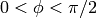 上寻找上述方程的解。
sage: phi = var('phi')
sage: find_root(cos(phi)==sin(phi),0,pi/2)
0.785398163397448...
Sage知道如何求很多函数的微分和积分。比如求 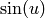
对  的微分这样做：
的微分这样做：
sage: u = var('u')
sage: diff(sin(u), u)
cos(u)
计算 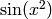 的4阶微分：
sage: diff(sin(x^2), x, 4)
16*x^4*sin(x^2) - 48*x^2*cos(x^2) - 12*sin(x^2)
分别计算 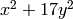 对 x 和 y 的偏微分：
sage: x, y = var('x,y')
sage: f = x^2 + 17*y^2
sage: f.diff(x)
2*x
sage: f.diff(y)
34*y
再来看积分，定积分、不定积分都可以计算。计算 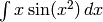 和 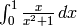
sage: integral(x*sin(x^2), x)
-1/2*cos(x^2)
sage: integral(x/(x^2+1), x, 0, 1)
1/2*log(2)
计算 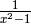 的部分分式分解：
sage: f = 1/((1+x)*(x-1))
sage: f.partial_fraction(x)
1/2/(x - 1) - 1/2/(x + 1)
可以用Sage求解常微分方程组。求解方程 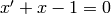:
sage: t = var('t') # 定义变量t
sage: x = function('x',t) # 定义x是变量t的函数
sage: DE = diff(x, t) + x - 1
sage: desolve(DE, [x,t])
(c + e^t)*e^(-t)
这里用到了Sage调用Maxima [Max] 的接口， 所以它的输出看上去与其他Sage的输出略有不同。 这里，上述微分方程的通解是： 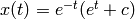.
你也可以计算Laplace变换。下面计算 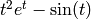 的Laplace变换：
sage: s = var("s")
sage: t = var("t")
sage: f = t^2*exp(t) - sin(t)
sage: f.laplace(t,s)
2/(s - 1)^3 - 1/(s^2 + 1)
这儿有一个更复杂的例子。两个弹簧连在左边的墙上，
|------\/\/\/\/\---|mass1|----\/\/\/\/\/----|mass2|
spring1 spring2
物体偏离平衡态的位移可以描述为一个2阶常微分方程：
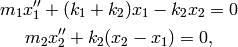
这里 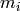 是物体 i 的质量,  是物体 i 偏离平衡态的位移, 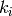 是弹簧 i
的弹性系数。
是物体 i 偏离平衡态的位移, 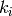 是弹簧 i
的弹性系数。
例： 在下面的条件下，使用Sage求解上面的问题 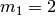, 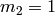, 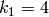, 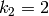, 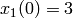, 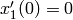, 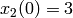, 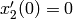.
解：对第一个方程做Laplace变换（记 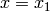, 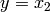 ）：
sage: de1 = maxima("2*diff(x(t),t, 2) + 6*x(t) - 2*y(t)")
sage: lde1 = de1.laplace("t","s"); lde1
2*(-?%at('diff(x(t),t,1),t=0)+s^2*'laplace(x(t),t,s)-x(0)*s)-2*'laplace(y(t),t,s)+6*'laplace(x(t),t,s)
结果很难读，意思其实是：
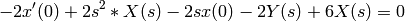
(这里对函数 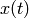 的Laplace变换记为 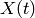)。 对第二个方程做Laplace变换：
sage: de2 = maxima("diff(y(t),t, 2) + 2*y(t) - 2*x(t)")
sage: lde2 = de2.laplace("t","s"); lde2
-?%at('diff(y(t),t,1),t=0)+s^2*'laplace(y(t),t,s)+2*'laplace(y(t),t,s)-2*'laplace(x(t),t,s)-y(0)*s
即
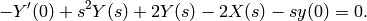
代入 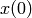, 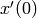, 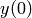, 和 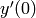 的初始条件， 并求解求出的两个方程：
sage: var('s X Y')
(s, X, Y)
sage: eqns = [(2*s^2+6)*X-2*Y == 6*s, -2*X +(s^2+2)*Y == 3*s]
sage: solve(eqns, X,Y)
[[X == 3*(s^3 + 3*s)/(s^4 + 5*s^2 + 4),
Y == 3*(s^3 + 5*s)/(s^4 + 5*s^2 + 4)]]
现在做逆Laplace变换得到结果：
sage: var('s t')
(s, t)
sage: inverse_laplace((3*s^3 + 9*s)/(s^4 + 5*s^2 + 4),s,t)
cos(2*t) + 2*cos(t)
sage: inverse_laplace((3*s^3 + 15*s)/(s^4 + 5*s^2 + 4),s,t)
-cos(2*t) + 4*cos(t)
所以，原方程组的解是：
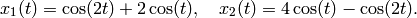
可以把结果画出来：
sage: t = var('t')
sage: P = parametric_plot((cos(2*t) + 2*cos(t), 4*cos(t) - cos(2*t) ),\
... (t, 0, 2*pi), rgbcolor=hue(0.9))
sage: show(P)
每一个分支都可以画出来：
sage: t = var('t')
sage: p1 = plot(cos(2*t) + 2*cos(t), (t,0, 2*pi), rgbcolor=hue(0.3))
sage: p2 = plot(4*cos(t) - cos(2*t), (t,0, 2*pi), rgbcolor=hue(0.6))
sage: show(p1 + p2)
（更多关于做图的内容，参见 绘图.）
参考文献: Nagle, Saff, Snider, Fundamentals of Differential Equations, 6th ed, Addison-Wesley, 2004. (见 § 5.5).
下面的例子中，我们展示求解1阶，2阶常微分方程组的Euler方法。 我们先来回顾一下1阶方程的基本知识。给定如下形式的初值问题：
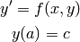
我们要找方程在 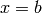 处的近似解，且 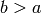.
根据微分的定义
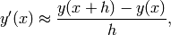
这里 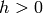 是给定的，且较小的量。与微分方程一起得到 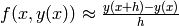. 现在求 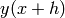:
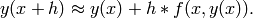
如果将 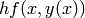 称为“校正项”（没有更好的名字）， 称 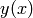 为 y 的旧值， 为 y 的新值， 那么该近似公式可以改写为：
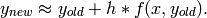
如果将由 a 到 b 的区间 n 等分，则 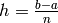, 我们可以用一个表记录该方法得到的信息。
 |
 |
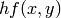 |
|---|---|---|
| 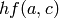 | ||
| 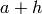 | 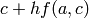 | ... |
| 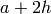 | ... | |
| ... | ||
| 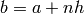 | ??? | ... |
我们的目标是把表中的空格都填上，每次一行，直到到达 ??? 这一项， 也就是 Euler 方法求得的 的近似值。
类似的，可以求解常微分方程组。
例： 用4步Euler方法求 在 处的近似值， 这里 , , .
我们必须将2阶常微分方程化为两个1阶微分方法（令 , ）并再应用Euler方法：
sage: t,x,y = PolynomialRing(RealField(10),3,"txy").gens()
sage: f = y; g = -x - y * t
sage: eulers_method_2x2(f,g, 0, 1, 0, 1/4, 1)
t x h*f(t,x,y) y h*g(t,x,y)
0 1 0.00 0 -0.25
1/4 1.0 -0.062 -0.25 -0.23
1/2 0.94 -0.12 -0.48 -0.17
3/4 0.82 -0.16 -0.66 -0.081
1 0.65 -0.18 -0.74 0.022
即, .
我们可以把点  画出来，得到曲线的近似图像。
函数 eulers_method_2x2_plot 可以做到这一点。
为了应用该函数，要先定义函数 f 和 g 来接受含三个坐标的参数：
(t, x, y).
画出来，得到曲线的近似图像。
函数 eulers_method_2x2_plot 可以做到这一点。
为了应用该函数，要先定义函数 f 和 g 来接受含三个坐标的参数：
(t, x, y).
sage: f = lambda z: z[2] # f(t,x,y) = y
sage: g = lambda z: -sin(z[1]) # g(t,x,y) = -sin(x)
sage: P = eulers_method_2x2_plot(f,g, 0.0, 0.75, 0.0, 0.1, 1.0)
这里, P 保存了两个图像, P[0] 是 x 关于 t 的图像, P[1] 是 y 关于 t 的图像。我们把它们都画出来：
sage: show(P[0] + P[1])
(更多关于做图的内容，参见 绘图.)
一些正交多项式和特殊函数是使用PARI [GAP] 和Maxima [Max] 实现的。 在Sage参考手册的相关章节（“正交多项式”和“特殊函数”）中有详细信息。
sage: x = polygen(QQ, 'x')
sage: chebyshev_U(2,x)
4*x^2 - 1
sage: bessel_I(1,1,"pari",250)
0.56515910399248502720769602760986330732889962162109200948029448947925564096
sage: bessel_I(1,1)
0.565159103992485
sage: bessel_I(2,1.1,"maxima") # last few digits are random
0.16708949925104899
这里Sage直接求得数值解，如果想求符号解，请象下面这样直接使用Maxima接口：
sage: maxima.eval("f:bessel_y(v, w)")
'bessel_y(v,w)'
sage: maxima.eval("diff(f,w)")
'(bessel_y(v-1,w)-bessel_y(v+1,w))/2'
| [GAP] | The GAP Group, GAP - Groups, Algorithms, and Programming, http://www.gap-system.org |
| [Max] | (1, 2) Maxima, http://maxima.sf.net/ |